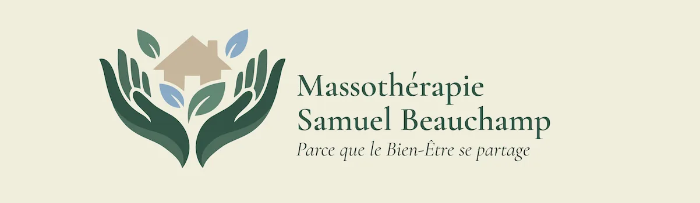
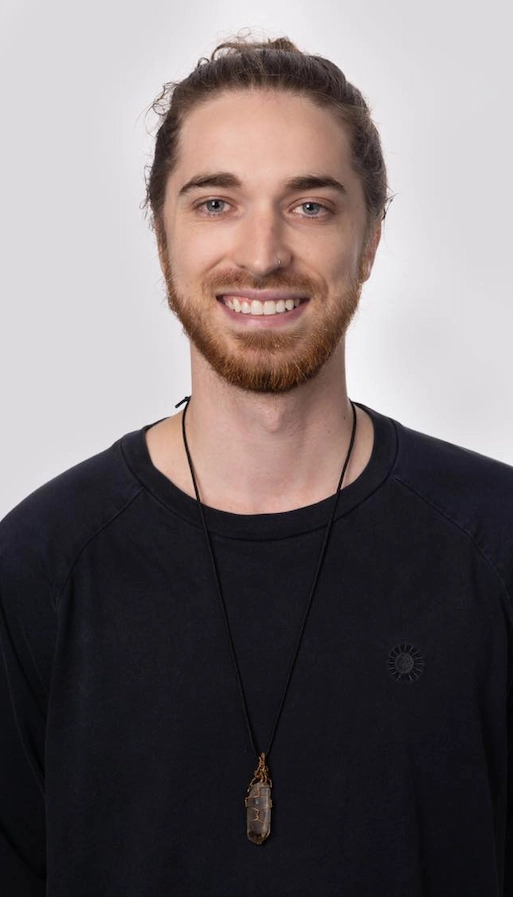
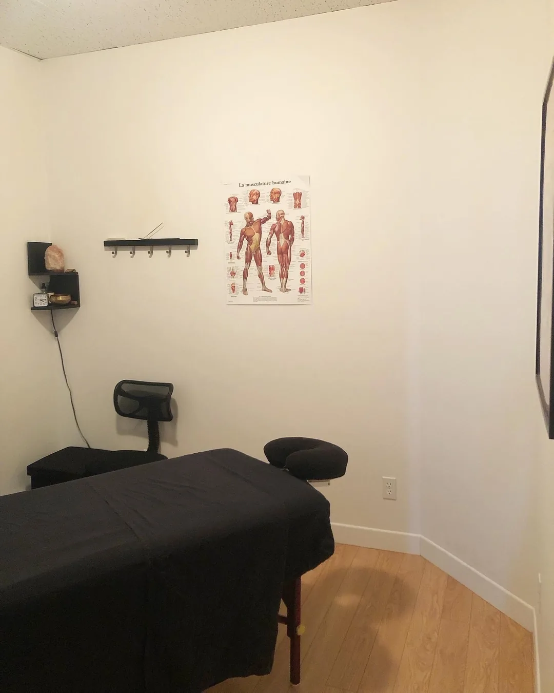

Massothérapeute à Rimouski —
Soulagez vos douleurs, retrouvez votre bien-être
Une approche intégrative basée sur la précision technique,
l'écoute du corps et la conscience du mouvement

Samuel Beauchamp
Mon approche combine précision technique et écoute attentive pour cibler la source réelle de vos douleurs — pas seulement là où vous les sentez.
Je me spécialise en massage des tissus profonds et en écoute du corps : un travail lent et soutenu qui dénoue les tensions accumulées, améliore la mobilité et soulage les inconforts au dos, aux lombaires, aux épaules, au cou, aux hanches, aux genoux et aux chevilles.
Ce qui me distingue : je prends le temps qu'il faut avec chaque client. Chaque séance est adaptée à votre corps et vos objectifs — que ce soit pour récupérer d'une blessure, retrouver votre amplitude, ou simplement décrocher en profondeur.
Basé à Rimouski, au service du Bas-Saint-Laurent.
Formation
- Diplôme en massothérapie — École Kineconcept, Montréal
- Formation de base en massage des tissus profonds — Daniel Poirier et Glen Morris
- Formation en relâchement du diaphragme — Daniel Poirier
- Formation en travail de l'épaule — Daniel Poirier
Une Approche Fondée sur la Compétence
Trois piliers thérapeutiques pour un relâchement profond et durable, et une reconnexion avec votre corps
Massage des Tissus Profonds
Travail en profondeur sur les tissus pour dénouer les tensions chroniques, redonner de la mobilité aux articulations et réduire les douleurs persistantes au dos, aux lombaires, aux épaules, au cou, aux hanches, aux genoux et aux chevilles.
Pressions soutenues • Mouvements intentionnels
Respiration & Conscience
L'accompagnement respiratoire aide le système nerveux à se calmer et permet au corps de relâcher les tensions que les mains seules ne peuvent pas atteindre. Vous repartez la tête libre et le corps léger.
Présence • Intériorisation • Relâchement
Circulation Intégrative
Techniques de massage favorisant la circulation sanguine, l'oxygénation des muscles et la récupération musculaire — idéal pour récupérer après l'effort ou une longue période de stress.
Circulation • Détoxification • Récupération
Déroulement d'une séance
Chaque séance suit une démarche structurée, adaptée à vos besoins et à ce que votre corps exprime
Discussion et évaluation posturale
Discussion approfondie sur vos douleurs, votre historique et vos habitudes de vie. Évaluation de votre posture et de votre amplitude de mouvement pour cibler précisément les zones à soulager — rien n'est laissé au hasard.
Observation du corps en mouvement
Lecture attentive de votre posture en statique et en mouvement. Cette analyse permet de repérer les déséquilibres musculaires et d'orienter le travail vers les zones qui compensent pour les autres — pour une séance vraiment personnalisée.
Travail en Profondeur & Respiration
Travail des tissus profonds avec pressions lentes et soutenues, qui relâche du même coup les tissus myofasciaux environnants. L'accompagnement respiratoire aide le système nerveux à se calmer et le corps à relâcher en profondeur. Je prends le temps nécessaire pour que vous puissiez ressentir et comprendre ce que votre corps exprime — séance après séance.
Retour sur la séance et recommandations
Discussion post-séance sur ce qui a été observé et relâché. Suggestions d'exercices d'auto-relâchement, d'ajustements posturaux et de pratiques respiratoires pour prolonger les bienfaits de la séance et soutenir votre progression entre les rendez-vous.

Ce Qui Distingue
Mon Approche
Capacité de Ralentir
Chaque séance prend le temps qu'il faut. Pas de minuterie, pas de protocole standard — une présence attentive et un travail adapté à ce que votre corps exprime ce jour-là.
Écoute Active de Votre Corps
J'aide mes clients à reconnaître leurs zones de tension et à comprendre ce que leur corps exprime. Cette conscience corporelle amplifie les résultats et vous aide à maintenir vos acquis entre les séances.
Approche du Bas-Saint-Laurent
Une pratique établie à Rimouski, alliant rigueur technique et respect du rythme naturel de chaque client — sans protocoles standardisés, chaque séance est unique.
Ce que disent mes clients
Extraits d’avis publiés sur Google — 5,0 sur 17 avis. Chaque avis est consultable à la source.
« Samuel est un massothérapeute exceptionnel ! Je le consulte pour m’aider avec ma fasciite plantaire. Il prend le temps d’écouter, d’expliquer et de donner des trucs pour que les bienfaits du traitement perdurent entre les rendez-vous. Je suis venue de Québec pour le consulter et, honnêtement, ça en a largement valu le déplacement ! »
Martine C. · avis Google
« Ma 1re rencontre avec Samuel m’a fait un grand bien. Accueil simple et chaleureux et technique très intéressante. Travail lent et en profondeur qui dénoue les tensions et aide le corps à se régénérer. Je vais certainement avoir encore recours à ses services. »
Anne-Marie J. · avis Google
« Excellent massothérapeute, qui est particulièrement doué pour soulager les tensions musculaires. Définitivement un des meilleurs que j’ai consulté. »
Myriam de L. · avis Google
« Il trouve tous les points et les travaille avec un doigté majestueux, en douceur et en finesse. Il est à l’écoute de nos besoins et de notre corps. Vous pouvez lui faire confiance, il saura vous faire retrouver une détente. »
Marie-Pierre C. · avis Google
Les résultats varient d’une personne à l’autre. La massothérapie est une pratique de mieux-être complémentaire : elle ne pose pas de diagnostic et ne remplace pas un suivi médical.
Quand la massothérapie peut aider
Le massage des tissus profonds est particulièrement indiqué pour
La massothérapie est une pratique de mieux-être complémentaire. Elle ne remplace pas un diagnostic ni un suivi médical professionnel.
Douleurs Chroniques
Tensions persistantes au cou, aux épaules, au dos, aux lombaires, aux hanches, aux genoux et aux chevilles
Restrictions de Mobilité
Raideurs articulaires, perte d'amplitude et difficulté à bouger librement
Récupération Post-Blessure
Accompagnement après une blessure, une entorse ou une opération
Déséquilibres Posturaux
Mauvaise posture, déséquilibres musculaires et asymétries corporelles
Optimisation Performance
Amélioration de l'amplitude et de l'efficacité du mouvement sportif
Tensions liées au stress
Tensions musculaires accumulées liées au stress ou à l'épuisement
Pages détaillées par inconfort
Chaque situation a sa page : ce que vous ressentez, ce que le travail manuel peut apporter et comment se déroule la séance.
Tarification
Investissement dans votre santé et bien-être à long terme
Séance complète incluant évaluation, travail en profondeur et recommandations personnalisées
Séance approfondie pour un accompagnement plus complet, idéale pour les douleurs chroniques
Reçus d'Assurance
Si votre assurance couvre la massothérapie, n'hésitez pas à me consulter pour bénéficier de vos prestations. Votre bien-être est la priorité.
* Prix avant taxes. TPS (5 %) et TVQ (9,975 %) seront ajoutées au moment du paiement.
Prendre Rendez-vousQuestions Fréquentes
Tout ce que vous devez savoir avant votre première séance
Combien coûte une séance de massothérapie ?
Deux forfaits sont disponibles : 60 minutes à 80 $ ou 90 minutes à 120 $, avant taxes (TPS 5 % et TVQ 9,975 %). La séance de 90 minutes est recommandée pour un accompagnement plus complet, notamment pour les douleurs chroniques.
Est-ce que les séances sont remboursées par les assurances ?
Des reçus d'assurance sont disponibles. Si votre régime d'assurance collective ou privée couvre la massothérapie, vous pouvez soumettre votre reçu pour remboursement. Vérifiez avec votre assureur avant votre séance.
Comment prendre rendez-vous ?
Trois façons de me joindre, au choix : 514 649-5560 (appel ou texto), sambeauchamp@hotmail.fr, ou Messenger Facebook via le bouton « Prendre Rendez-vous ». Le téléphone et le courriel ne demandent aucun compte sur une plateforme externe.
Qu'est-ce que le massage des tissus profonds ?
C'est un travail manuel lent et soutenu qui atteint les couches musculaires profondes, sous la surface. Il relâche du même coup les tissus myofasciaux qui entourent les muscles, ce qui aide à dénouer les tensions accumulées, à améliorer la mobilité et à soulager les inconforts persistants au dos, aux lombaires, aux épaules, au cou, aux hanches, aux genoux et aux chevilles.
Pour quels inconforts la massothérapie peut-elle aider ?
La massothérapie peut aider à soulager les douleurs au dos, aux lombaires, au cou, aux épaules, aux hanches, aux genoux et aux chevilles, les raideurs articulaires, les tensions liées au stress et à l'épuisement, ainsi que pour accompagner la récupération après une blessure. Elle est aussi bénéfique pour améliorer la mobilité et la performance sportive.
Comment se déroule une première séance ?
La première séance commence par une discussion sur vos douleurs et vos objectifs, suivie d'une lecture de votre posture. Vient ensuite le travail en profondeur avec accompagnement respiratoire. La séance se termine par des recommandations personnalisées pour prolonger les bienfaits entre les rendez-vous.
Où Me Trouver à Rimouski
Le local est au centre-ville de Rimouski, sur l'avenue de la Cathédrale : un espace propre et tranquille, facile d'accès depuis toute la région.
Adresse
Samuel Beauchamp — MassothérapeuteMassothérapie thérapeutique à Rimouski
244 avenue de la Cathédrale
Rimouski, Québec
Vous avez déjà consulté ?
Un avis Google aide énormément les personnes de la région à trouver un massothérapeute en qui avoir confiance. Merci de prendre une minute.
Laisser un avis GoogleSecteur desservi
Clientèle de Rimouski et de tout le Bas-Saint-Laurent : Pointe-au-Père, Le Bic, Saint-Anaclet-de-Lessard, Sainte-Luce, Saint-Fabien, Mont-Joli, Sainte-Flavie, Trois-Pistoles, Amqui et Matane.
Prenez rendez-vous
Décrivez-moi ce que vous ressentez et on déterminera ensemble la durée et le type de séance qui conviennent. Par Messenger ou par téléphone.
Par téléphone ou par courriel, aucune plateforme externe n'est nécessaire. Le bouton Messenger, lui, ouvre Facebook (Meta, États-Unis).